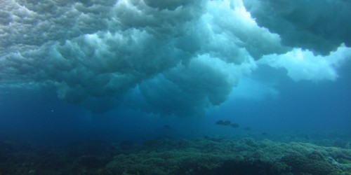
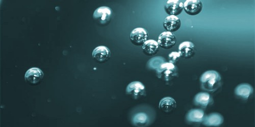
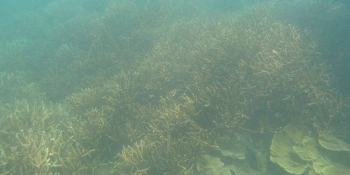
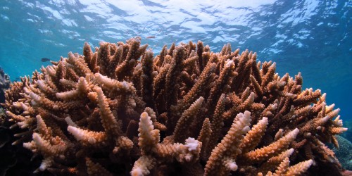
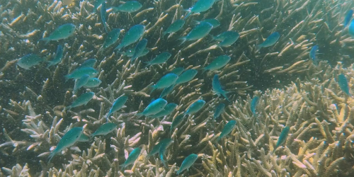

eReefs AIMS Visualisation Portal
In this portal you will find a range of visualisations of the eReefs Hydrodynamic and BioGeoChemical models of the Great Barrier Reef. These models are like weather models, but for the marine environment, providing a picture of the current and historical environmental conditions on the Great Barrier Reef. Here you can see past extreme weather events such as:
- Cyclones: Yasi (Feb 2011), Ita (April 2014), Nathan (March 2015), Debbi (March 2017),
- Coral bleaching from high temperature (March 2016, March 2017),
- Flood plumes with low salinity (North Queensland Flooding 2019, Burdekin Jan 2011)
This site provides both direct visualisations of the outputs of the eReefs Hydrodynamic and BioGeoChemical models and aggregations of the hourly and daily data to longer time periods (monthly and annual).
eReefs CSIRO Hydrodynamic Model
The eReefs hydrodynamic model predicts the movement of water and key environmental conditions (temperature, salinity, currents, tides). This model allows us to better understand how cyclones mix the water, the location of potentially damaging heat waves, the ocean currents that disperse larvae of corals and Crown-of-Thorns starfish, and fresh water plumes from flooded rivers that can damage inshore reefs.
This model is run with a 4 km and 1 km grid size. The 4 km grid has a longer hindcast going back to September 2010, while the 1 km model starts in December 2014. The 1 km model also only extends out to the edge of the Great Barrier Reef, whereas the 4 km model covers much of the Coral Sea. The hydrodynamic model and visualisations are normally updated in near-real time, within 1 week of the current date.
Note: The eReefs models are currently not being run in near-real time by CSIRO as a result this site only shows the back catalogue up to mid 2020. Near realtime results are expected to be back in operation by the end of 2020.
4 km model (Sept 2010 - present)
Water movement and physical characteristics

1 km model (Dec 2014 - present)
Water movement and physical characteristics
- Temperature, wind, salinity and current
- Temperature at 2.35m, 18m and 49m depth
- Current at 2.35m, 18m and 103m depth
- Salinity at 2.35m, 5.35m and 18m depth
- Fresh water exposure at 2.35m
- Current magnitude average at 2.35m
- Temperature range at 2.35m
- Flood plume extents for major rivers on GBR based on modelled river tracers
eReefs CSIRO BioGeoChemical model (4 km)
The GBR4 BioGeoChemical (GBR) model builds on the GBR4 hydrodynamic model by modelling the water quality (nutrients and suspended sediment) and key ecological processes (coral, seagrass, plankton) that drive the water chemistry. This model allows us to better understand how water quality is affected by land runoff. Detailed information about the model can be found in the paper: CSIRO Environmental Modelling Suite (EMS): Scientific description of the optical and biogeochemical models (vB3p0).
The visualisations on this site are based on version 3.1 of the BioGeoChemical (BGC) model with the baseline conditions. Version 3.1 of the BGC was developed to compare the effects of land practice improvements on water quality changes in the Great Barrier Reef. It was run with three scenarios of river sediment and nutrient loads to simulate the differences between baseline conditions (based on current land use practices in 2019), pre-industrial catchment conditions, and target catchment conditions (anthropogenic loads reduced according to the percentage reductions of DIN, PN, PP and TSS specified in the Reef 2050 Water Quality Improvement Plan 2017-2022). This site currently only visualises the baseline scenario run of the model, however data is available for the other scenarios via the NCI THREDDS service (raw model data in curvilinear NetCDF format), the AIMS Data Extraction tool (time series extraction in CSV format) and regridded and aggregated format via the AIMS eReefs THREDDS service.
A technical assessment of the skill level of the BGC version 3.1 model shows that the absolute accuracy of the BGC model varies significantly with variable and location. A older analysis on the BGC version 2.0 (Skerratt et al., 2018) provides additional background on the skill of the BGC model. As a result care should be taken to ensure the model is fit-for-purpose and in general BGC results should used in combination with second sources of information for making recommendations.
Water chemistry

- Total alkalinity, PH & Aragonite saturation state
- Dissolved inorganic nitrogen, nitrate & ammonia
- Dissolved oxygen & oxygen saturation percentage
- Dissolved Inorganic (Carbon, Nitrogen & Phosphorus)
- Dissolved Organic (Carbon, Nitrogen & Phosphorus)
- Particulate inorganic phosphorus & particulate inorganic
Water quality measures

Macroalgae, seagrass and coral

Catchment scenarios comparison

Refereneces
Skerratt, J, Mongin, M, Baird, M, Wild-Allen, K, Robson, B, Schaffelke, B, Davies, C, Richardson, A, Margvelashvili, N, Soja-Wozniak, M, and Steven, A, 2019a, Simulated nutrient and plankton dynamics in the Great Barrier Reef (2011-2016), Journal of Marine Systems, vol. 192, pp. 51-74, http://dx.doi.org/10.1016/j.jmarsys.2018.12.006